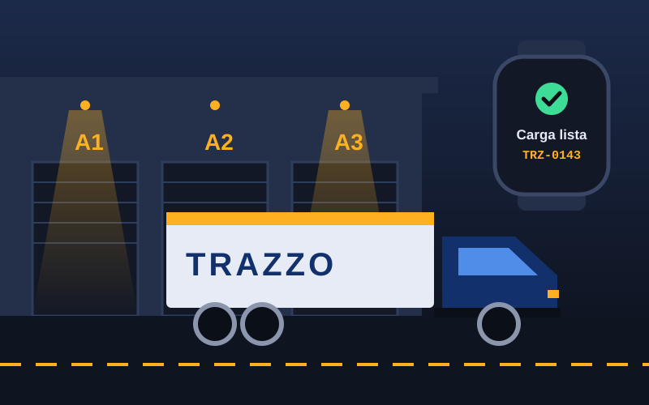

Resumen del día
Tablero de operación
Mapa de unidades
5 unidades con GPSViajes en curso
Ver todo →| Folio | Ruta | Operador | Unidad | Avance | ETA | Estado |
|---|---|---|---|---|---|---|
| TRZ-0142 | Puebla → CDMX | J. Pérez | PUE-45-8K | 15:40 | En ruta | |
| TRZ-0141 | Tlaxcala → Toluca | R. Sánchez | TLX-20-4R | 17:05 | En ruta | |
| TRZ-0140 | Veracruz → Monterrey | — | — | — | Pendiente | |
| TRZ-0138 | León → Tijuana | A. Ruiz | GTO-88-1P | +40 min | Retraso | |
| TRZ-0139 | Querétaro → Guadalajara | L. Méndez | QRO-12-3M | 09:12 | Entregado |
Alertas
3- TRZ-0138 con 40 min de retrasoCaseta Querétaro · hace 5 min
- TRZ-0140 sin operador asignadoSalida programada a las 13:00
- J. Pérez confirmó la carga desde su relojTRZ-0142 · hace 22 min
- La póliza GNP-7781 vence en 12 díasUnidad PUE-45-8K
Flota
Folio generado · TRZ-0143
Registrar nueva ruta
Folio TRZ-0143 · Puebla → CDMX
Asignar operador y unidad
Operadores
3 disponibles de 18Unidad
Actualización en tiempo real
Monitoreo de viajes
Puebla → CDMX
León → Tijuana
Tlaxcala → Toluca
Veracruz → Monterrey
Puebla → CDMX
Querétaro → Guadalajara
No hay viajes que coincidan con el filtro.
Control de acceso
Personal y roles
Usuarios
34 registrados| Nombre | Correo | Rol | Dispositivos | Estado |
|---|---|---|---|---|
| Iván Arcos | ivan@trazzo.mx | Administrador | Web · TV | Activo |
| Miriam González | miriam@trazzo.mx | Administradora | Web · TV | Activo |
| Daniel Barrios | daniel@trazzo.mx | Capturista | Web | Activo |
| Juan Pérez | juan.perez@trazzo.mx | Operador | Móvil · Wear OS | En ruta |
| Laura Méndez | laura@trazzo.mx | Operadora | Móvil · Wear OS | Activo |
| Rocío Herrera | rherrera@golfo.com | Cliente | Web | Inactivo |
Permisos por rol
Guía de uso
Cómo funciona Trazzo
Un solo lugar para cada viaje de carga
Trazzo es un emprendimiento poblano de tecnología logística. Su aplicación web conecta la oficina, el patio de carga y la cabina del camión: lo que se registra en el navegador aparece al instante en la pantalla del patio y en el reloj del operador.
El capturista da de alta la ruta con origen, destino, mercancía y cliente. El sistema genera un folio y la deja lista para asignar.
El administrador elige al operador y la unidad según disponibilidad, licencia y póliza vigente. Al confirmar, el operador recibe el aviso en su reloj y la pantalla del patio indica en qué andén cargar.

Por qué nace Trazzo
Viajes coordinados por teléfono
Las transportistas pequeñas registran sus viajes en hojas de cálculo y mensajes. La información se pierde y el cliente no sabe dónde está su carga.
Un centro de control compartido
Una aplicación web que funciona en cualquier navegador y se instala como app. No requiere servidores propios ni equipo especializado.
Menos llamadas, entregas a tiempo
Despacho, operadores y clientes consultan el mismo dato. Los retrasos se detectan en minutos, no al final del día.
El recorrido de un viaje
- Registrar la ruta
Captura origen, destino, mercancía, peso y flete. Trazzo asigna el folio.
- Asignar operador y unidad
Solo aparecen operadores libres y unidades con seguro vigente.
- Notificar al reloj
El operador acepta el viaje y confirma la carga desde su reloj Wear OS.
- Seguir hasta la entrega
El GPS actualiza el avance y la hora de llegada; los retrasos generan una alerta en el tablero.
Seguimiento en vivo
Cada unidad reporta su posición cada minuto. La barra de avance y la hora estimada de llegada se recalculan con cada reporte, así que el cliente ve el mismo dato que el despacho.
Si una unidad se detiene más de 15 minutos fuera de una caseta o parada programada, el viaje cambia a Retraso y aparece en la lista de alertas.
Abrir monitoreo